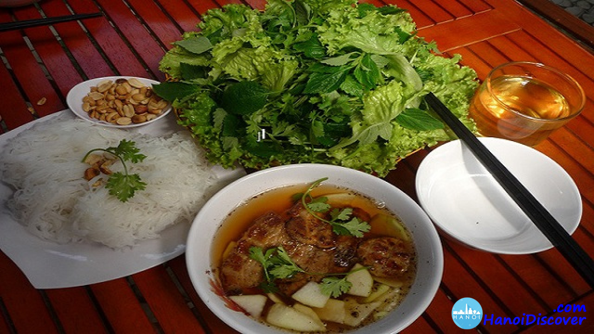

Bun Cha

Description
Bun Cha is a traditional vietnamese dish that is popular with locals and tourists alike. It consists of different parts but the main broth consists of a caramel sauce base and has pork meatballs, and thinly sliced fresh vegetables. It is traditionally served with rice noodles and an herb basket.
Ingredients
Caramel Sauce
- 70 grams (5 tbsp) sugar
- 150 ml (1/2 C + 2 tbsp) hot water
Grilled Pork
- 450 grams (1 lb.) pork shoulder or pork belly (choose a fatty piece to prevent the meat from drying out while being grilled)
- 450 grams (1 lb.) minced pork (similarly, choose minced pork with at least 10% fat)
- 50 grams shallots (about 6 - 8 shallots)
- 15 grams garlic (3 - 5 cloves)
- Fish sauce
- Oyster sauce
Side Veggies
- 400 grams green papaya, carrots, kohlrabi
- 25 grams (2 tbsp) sugar
- 15 ml (1 tbsp) rice vinegar or lemon juice
- ¾ tsp salt
- Fresh herbs to serve: coriander, perilla, lettuce, Vietnamese balm
Dipping Sauce and Noodles
- 25 grams (1.5 tbsp) sugar
- 15 - 18 ml (1 tbsp) lemon juice/rice vinegar
- 175 ml (3/4 cup) water
- 15 - 20 ml (1 - 1.5 tbsp) fish sauce
- Garlic, chilli, black pepper - to taste
- 1.5 kg fresh rice vermicelli noodles or 0.5 kg dried rice vermicelli noodles
Directions (simplified)
- marinating the meat
- making the pickles and the dipping sauce
- grilling the meat
- cooking dried vermicelli noodles
- serve
Full Directions